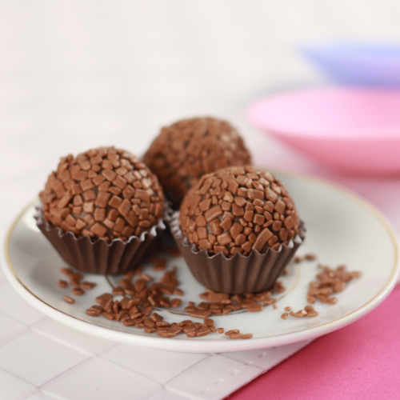

Receitas de doces
Encontre diversas receitas e monte a sua própria doceria.
Receita de brigadeiro

- 1 caixa de leite condensado
- 3 colheres de sopa de chocolate em pó
- 1 colher de sopa de manteiga
- 1 xícara de chocolate granulado
Ingredientes
- Em uma panela, coloque o leite condensado, o chocolate em pó e a manteiga
- Misture bem e leve ao fogo baixo, mexendo sempre até desprender do fundo da panela (cerca de 10 minutos)
- Retire do fogo, passe para um prato untado com manteiga e deixe esfriar
- Com as mãos untadas, enrole em bolinhas e passe-as no granulado
- Sirva em forminhas
Modo de preparo
Receita de beijinho
- 1 caixa de leite condensado
- 1 colher de sopa de margarina
- 1 xícara de coco ralado
Ingredientes
- Em uma panela, coloque o leite condensado e a manteiga
- Misture bem e leve ao fogo baixo, mexendo sempre até desprender do fundo da panela
- Retire do foco, passe para um prato untado com manteiga e deixe esfriar
- Com as mãos untadas, enrole em bolinhas e passe no coco ralado
- Sirva em forminhas